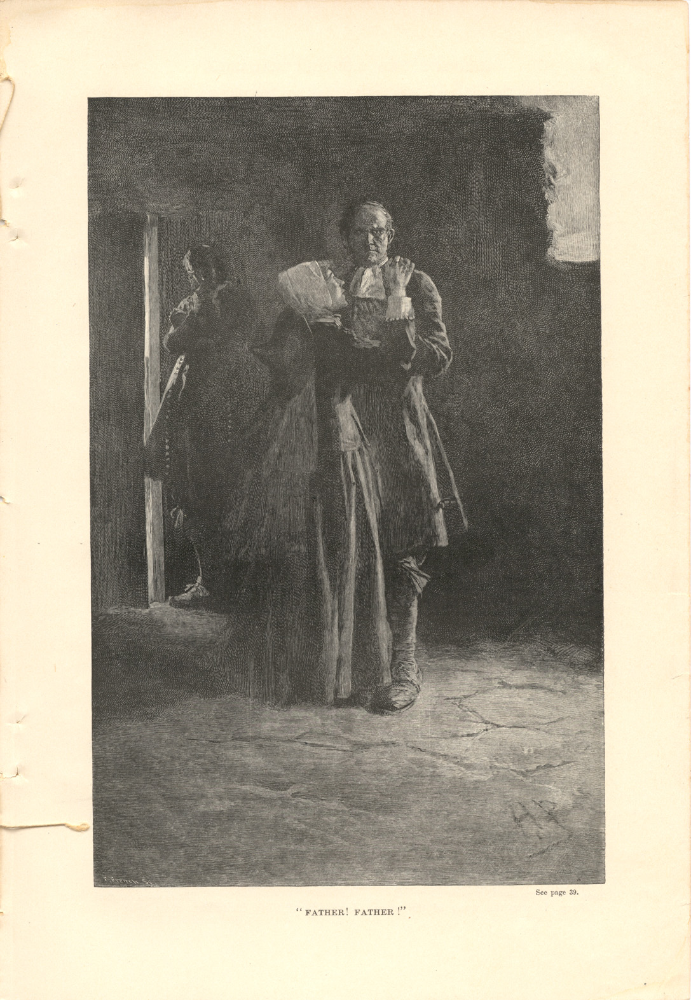

Giles Cory, Yeoman.
A Play
by Mary E. Wilkins
Published by Harper's New Monthly Magazine
Volume LXXXVI.
December 1892 to May, 1893
New York: Harper & Brothers, Publishers, 1893.
© 2001, Rector and Visitors of University
of Virginia
| << |
16/23: Wilkins - Page 33 |
< |
> |
